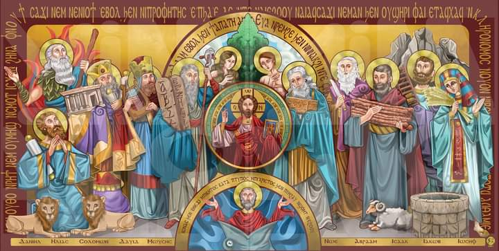

إن السيد الرب لا يصنع أمرا إلا وهو يعلن سره لعبيده الأنبياء (عا 3: 7)
إفتح كتابك : تك 49 :1 / عد 24: 14 /إش 21:45)
هي إعلان مقاصد الله، والإخبار بأحداث مستقبلية؛ قد تكون توبيخ؛ عقاب للأشرار ؛ تحذير؛ تعزية؛ عن المسيا؛
عن الملكوت والحياة الأبدية.
من الذي يُوصل هذا الإعلان؟ .......... النبي
هو الشخص الذي يختاره الله ويرسله لشعبه، ليعلن إرادة الله ومقاصده، ويُخبر الشعب بمستقبله كما يرشده "الوحي
الإلهي"
ويُكلفه أن يُعلن
وينادي أيضاً بالقضاء علي الشر والتمسك بالحق؛ وأن تكون الأخلاق الجيدة أهم من العبادة الشكلية. وكان يوجد أنبياء متفرغين لعمل التنبؤ مثل: موسي إيليا أليشع إشعياء، إرميا ..... وغيرهم. وأنبياء لم يكونوا متفرغين لعمل التنبؤ مثل إبراهيم إسحاق ،یعقوب ،نوح ،داود سليمان، دانيال.. وغيرهم كما كان يوجد نبيات من النساء مثل مريم أخت موسي وهارون، دبورة، خلدة، حنة أم صموئيل.
1.النبي
2.الراي
3.رسول

4.رجل الله
5.عبد الرب
6.انسان الروح
| الدور | الشاهد |
| 1- يقدم الشريعه و يعلم الشعب | ١صم 23:12-25/(تث 30:5-31) |
| 2- ينقل رسالة الله للشعب | ١مل 14:22 /٢اخ 25:29 |
| 3- يقضي للشعب | خر 19:18-22 |
| 4- وسيط بين الله و الشغب/ الشعب يسال الله بواسطته | خر 11:32-14 |
| 5- يمسح المختارين للملك و للكهنوت بالدهن المفدس فيصيرو ملوكه و كهنه | خر 7:29 |